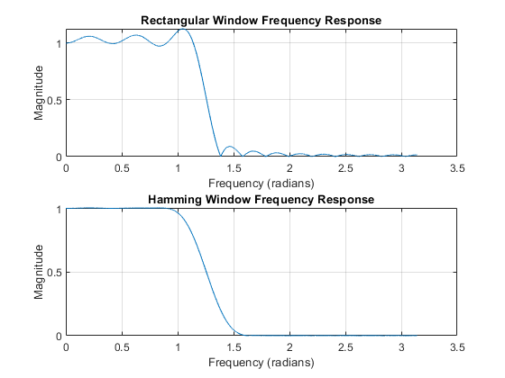
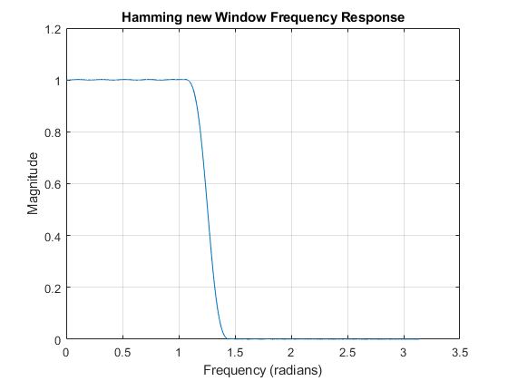
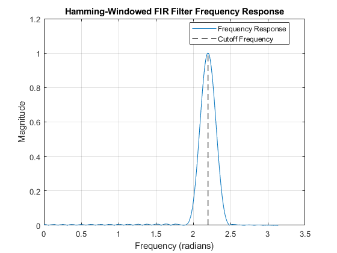
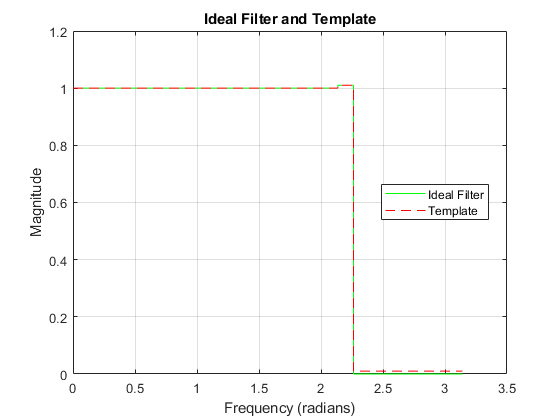

Contents
Section 2.1: Design Two Lowpass Filters
sampling frequency is 10000 and use filter coefficients(Rect30 and Ham30) which are generated from GUI Filter design
fs = 10000; freq_response_rectangular = freqz(Rect30, 1, linspace(0, pi, fs)); freq_response_hamming = freqz(Ham30, 1, linspace(0, pi, fs));
Plot frequency responses
figure; subplot(2, 1, 1); plot(linspace(0, pi, fs), abs(freq_response_rectangular)); title('Rectangular Window Frequency Response'); xlabel('Frequency (radians)'); ylabel('Magnitude'); grid; subplot(2, 1, 2); plot(linspace(0, pi, fs), abs(freq_response_hamming)); title('Hamming Window Frequency Response'); xlabel('Frequency (radians)'); ylabel('Magnitude'); grid;
Measurements from plot by zooming in...
% (a) Measurement of Passband Edge (wp) for Rectangular window wp_rectangular = 1.170; % (b) Measurement of Stopband Edge (ws) for Rectangular window ws_rectangular = 1.350; % (c) Measurement of Passband Edge (wp) for Hamming window wp_hamming = 0.95; % (d) Measurement of Stopband Edge (ws) for Hamming window ws_hamming = 1.545; % (e) Cutoff Frequency Comparison cutoff_rectangular = (wp_rectangular + ws_rectangular) / 2; cutoff_hamming = (wp_hamming + ws_hamming) / 2;
Display Results
disp('(a) Passband Edge (wp) for Rectangular window:'); disp(num2str(wp_rectangular)); disp('(b) Stopband Edge (ws) for Rectangular window:'); disp(num2str(ws_rectangular)); disp('(c) Passband Edge (wp) for Hamming window:'); disp(num2str(wp_hamming)); disp('(d) Stopband Edge (ws) for Hamming window:'); disp(num2str(ws_hamming)); disp('(e) Cutoff Frequency Comparison:'); disp('For Rectangular window:'); disp(num2str(cutoff_rectangular)); disp('For Hamming window:'); disp(cutoff_hamming);
(a) Passband Edge (wp) for Rectangular window:
1.17
(b) Stopband Edge (ws) for Rectangular window:
1.35
(c) Passband Edge (wp) for Hamming window:
0.95
(d) Stopband Edge (ws) for Hamming window:
1.545
(e) Cutoff Frequency Comparison:
For Rectangular window:
1.26
For Hamming window:
1.2475
Section 2.2: Transition Zone of the LPF
(a) Determine Transition Width for Rectangular window and Hamming Window
transition_width_rectangular = ws_rectangular - wp_rectangular; transition_width_hamming=ws_hamming-wp_hamming; disp('(a) Transition Width for Rectangular window:'); disp(num2str(transition_width_rectangular)); disp('(a) Transition Width for Hamming window:'); disp(num2str(transition_width_hamming));
(a) Transition Width for Rectangular window: 0.18 (a) Transition Width for Hamming window: 0.595
(b) Ripple Comparission
disp('(b) Comment: When comparing two Mth order filters, the one with a smaller transition width will have larger ripples.');
(b) Comment: When comparing two Mth order filters, the one with a smaller transition width will have larger ripples.
(c) Repeating the experimentwith coefficient data generated from GUI Filter for Hamming order 60.
freq_response_hamming_new = freqz(Ham60, 1, linspace(0, pi, fs)); figure; plot(linspace(0, pi, fs), abs(freq_response_hamming_new)); title('Hamming new Window Frequency Response'); xlabel('Frequency (radians)'); ylabel('Magnitude'); grid; wp_hamming_new=1.10; ws_hamming_new=1.40; transition_width_hamming_new = ws_hamming_new - wp_hamming_new; disp('(c) and (d) Measurement of wp, ws, and Transition Width for new Hamming window:'); disp('(c) Passband Edge (wp) for new Hamming window:'); disp(num2str(wp_hamming_new)); disp('(c) Stopband Edge (ws) for new Hamming window:'); disp(num2str(ws_hamming_new)); disp('(d) Transition Width for new Hamming window:'); disp(num2str(transition_width_hamming_new));
(c) and (d) Measurement of wp, ws, and Transition Width for new Hamming window: (c) Passband Edge (wp) for new Hamming window: 1.1 (c) Stopband Edge (ws) for new Hamming window: 1.4 (d) Transition Width for new Hamming window: 0.3
(d) Compare transition width for different orders
disp('(d) Comparison of Transition Width for different orders:'); disp('(a) Transition Width for Hamming window:'); disp(num2str(transition_width_hamming)); disp('(c) Transition Width for new Hamming window:'); disp(num2str(transition_width_hamming_new)); C_observed1 = transition_width_hamming * (30+1); C_observed2=transition_width_hamming_new*(60+1); disp('(d) Observed value of C1 and C2:'); disp(num2str(C_observed1)); disp(num2str(C_observed2)); disp('(d) Constant value C is'); disp(num2str(C_observed2));
(d) Comparison of Transition Width for different orders: (a) Transition Width for Hamming window: 0.595 (c) Transition Width for new Hamming window: 0.3 (d) Observed value of C1 and C2: 18.445 18.3 (d) Constant value C is 18.3
Section 2.3: Design FIR Filter to Meet Given Specifications
% (a) Sketch of ideal filter and template % Given values wp_spec = 0.68 * pi; ws_spec = 0.72 * pi; del_p_spec = 0.01; del_s_spec = 0.01;
Calculate filter order (M)
M_spec = ceil((-20 * log10(del_s_spec)) / (6.6 * (ws_spec - wp_spec))); disp(' Order of filter is:'); disp(M_spec); % Calculate filter length (L) L_spec = M_spec + 1;
Order of filter is:
49
(c) Design Hamming-Windowed FIR Filter
% Design the Hamming-windowed FIR filter b_spec = fir1(M_spec, [wp_spec/pi, ws_spec/pi], hamming(M_spec+1)); % Calculate the actual cutoff frequency wc_spec = (wp_spec + ws_spec) / 2; % Plot the frequency response freq_response_spec = freqz(b_spec, 1, linspace(0, pi, fs)); % Plot the Hamming-Windowed FIR Filter Frequency Response figure; plot(linspace(0, pi, fs), abs(freq_response_spec)); hold on; % Plot the cutoff frequency plot([wc_spec, wc_spec], [0, max(abs(freq_response_spec))], 'k--'); title('Hamming-Windowed FIR Filter Frequency Response'); xlabel('Frequency (radians)'); ylabel('Magnitude'); legend('Frequency Response', 'Cutoff Frequency', 'Location', 'Best'); grid;
(b) Sketch of Ideal Filter and Template Plot the ideal filter
figure; plot([0, wp_spec, wp_spec, ws_spec, ws_spec, pi], [1, 1, 1+del_p_spec, 1+del_p_spec, 0, 0], 'g'); hold on; % Plot the template plot([0, wp_spec, wp_spec, ws_spec, ws_spec, pi], [1, 1, 1+del_p_spec, 1+del_p_spec, del_s_spec, del_s_spec], 'r--'); title('Ideal Filter and Template'); xlabel('Frequency (radians)'); ylabel('Magnitude'); legend('Ideal Filter', 'Template', 'Location', 'Best'); grid; disp(' correct value to use for the cutoff frequency'); disp(2.199);
correct value to use for the cutoff frequency
2.1990
